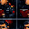
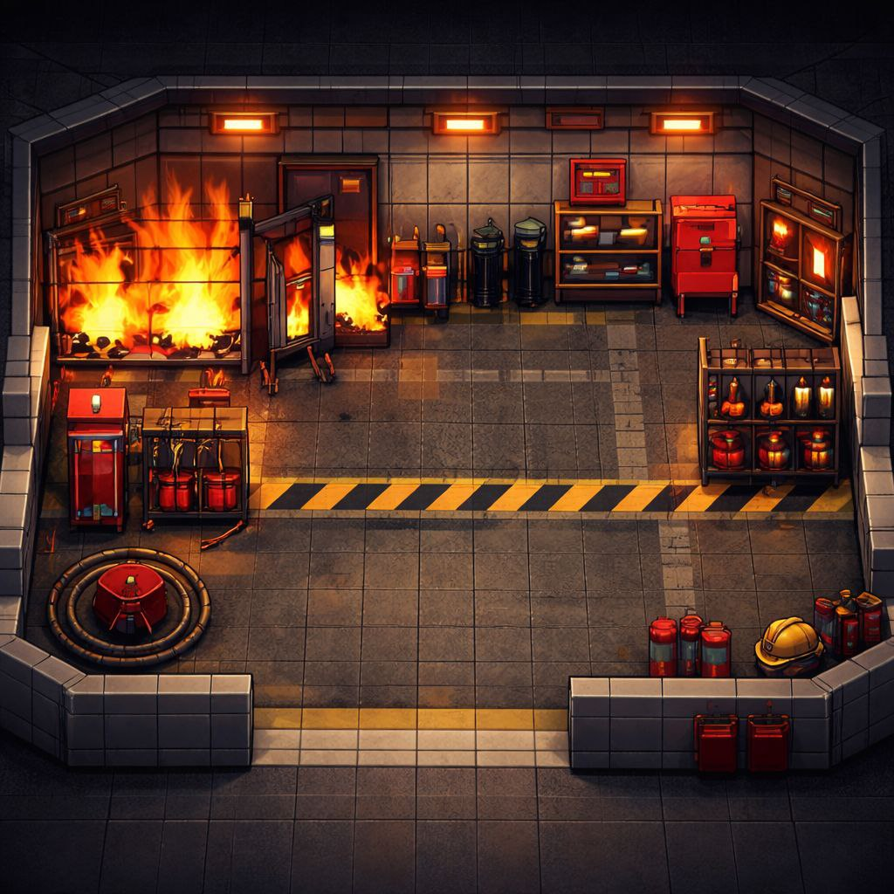
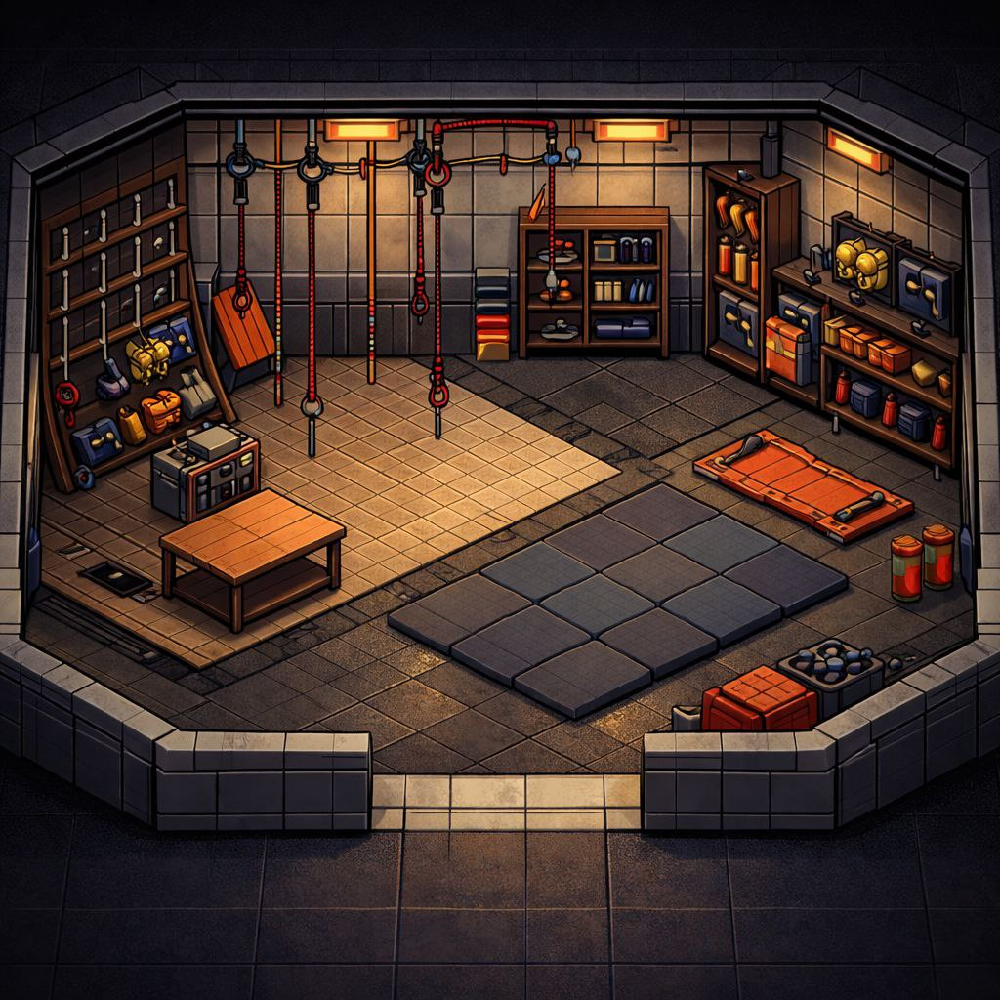
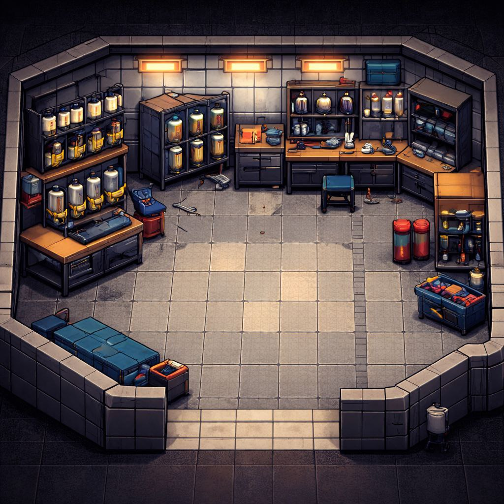
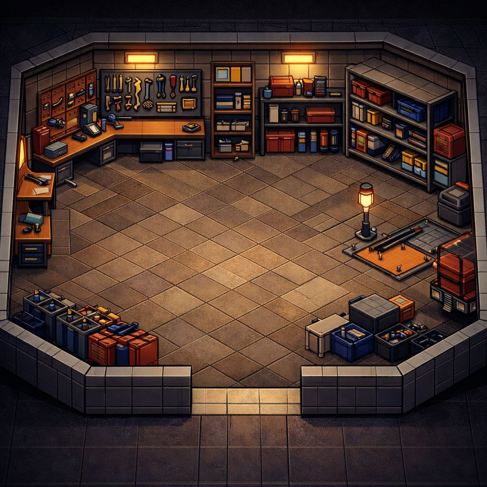

TFD 訓練中心（局網唯讀快照）
更新時間：2026-03-05 19:22:20 CST
source=local-backend
whispers=local-file
常駐名冊
（依「訓練中心分工」people 欄位生成；唯讀）

葉主任
周秘書
詹教官
潘董
紅賊
swallow
魚涵
欲生
訓練中心分工（含區域圖）
紅蓮議事廳
center
葉主任 / 周秘書
總控中樞：統籌全局、下達節奏
督導兩股推進，排除卡點
接收臨時交辦並完成閉環
業火煉獄
fire_train
詹教官

火場試煉：燃燒室/A塔運轉與維護
教官團編成與戰技標準化
火搶訓練與裝備補給/採購
留言：燃燒室不外借 滾
深淵救贖
rescue
潘董

救助鍛造：繩索救援訓練與師資培訓
水域/急流等專業課目支援
場地控管與器(耗)材整備
留言：相信魏哲家 明年換新家
生命聖所
scba
紅賊

呼吸之門：SCBA 訓練場與系統維護
空氣站點/呼吸裝備運作支援
呼吸相關課目之器材整備
留言：我就爛 我就爛 放我走
真理圖書館
edu
swallow
知識補給：進修/學分/補助流程
證照與訓練時數的登錄與核對
週報/會議資料彙整支援
留言：進修補助送出來前給我好好看
修復之泉
soul
魚涵
心防修復：心理衛生與安心服務/轉介
座談關懷與團隊支持
壓力緩解與心理教育宣導
留言：老娘現在滿手現金
馱獸工坊
beast
欲生

後勤巨輪：器材/財產清點與整備
車輛/里程/油報等管理支援
場地設施與器材維護協作
提示：互動版請走
https://office.tfd-train.com/
（局外/可用網路）